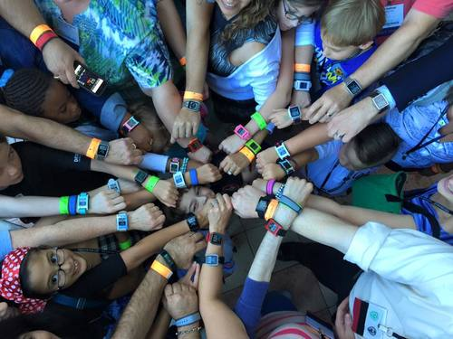
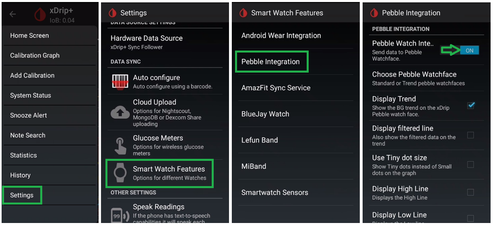
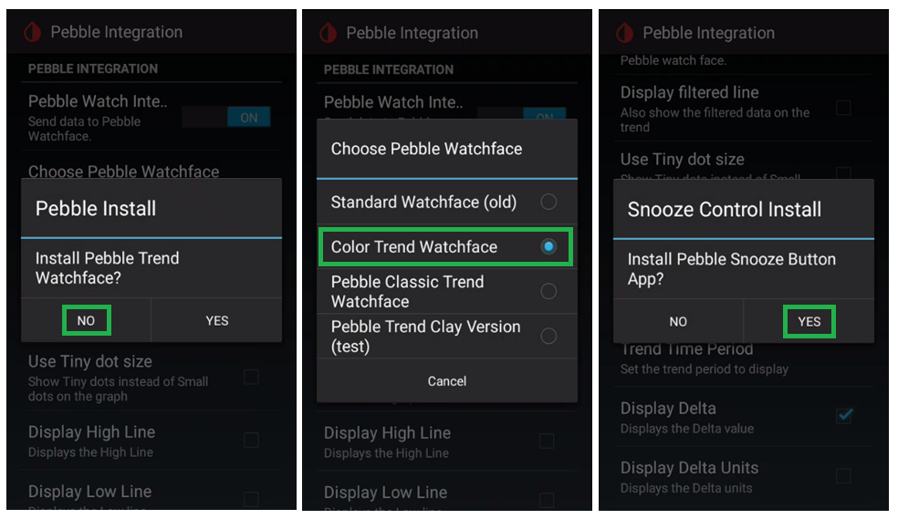
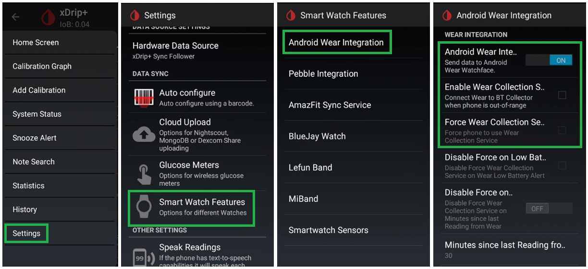

Nightscout on your Watch
Pebble Smartwatches
{kind=link}

Pebble smartwatch use is a historic milestone of CGM in the Cloud. Pebble has been bought by Fitbit in 2016 and necessary resources have moved to archives and rebble.io. Pebble support is still maintained in Loop, AndroidAPS, FreeAPS and xDrip.
You can’t find the Pebble app for iOS in the Apple Store anymore. For Android you need to download it from APKMirror or APKPure.
For authentication and getting the watchfaces, the original server closed so you’ll need to register with Rebble.
You’ll find Nightscout watchfaces here. Search for Nightscout, CGM, …
Configure the watchface with your Nightscout site URL.
urchin
A Pebble watchface to view data from a continuous glucose monitor in graph format.
If you want to use your Pebble with Loop look here, for AndroidAPS here and FreeAPS here.
xDrip
Enable Pebble Integration in Smartwatch features.
{kind=link}

You can answer no to default watchface install so that you will be able to select another one. You can then decide to install or not the snooze control.
{kind=link}

Android Wear OS smartwatches
With an Android smartphone.
Recommended: Install an old version of Android Wear on your phone (search APKMirror for example: Android Wear 2.9.0.185084575.gms) and pair your watch. Make sure to allow GPS and Wear OS access to position on the watch. Allow Wear OS to run in background on your phone.
Note:If you installed Wear OS, you will need to manually update the watch Google Play Services see here.
Once your smartwatch Google Play Service has been updated to a version above 9.x you can safely update Android Wear to Wear OS.
Change the watchface to match your app (in Wear OS or on your watch).
Install Wear OS on your phone and pair your watch. Make sure to allow GPS and Wear OS access to position on the watch. Allow Wear OS to run in background on your phone.
Install your app wear extension from the smartwatch Google Play store, selecting the apps installed on your phone.Note: Newer versions of Wear OS do not support this feature anymore, use Wear Installer or Use GeminiMan Wear OS Manager or Easy Fire Tools.
Change the watchface to match your app (in Wear OS or on your watch).
Install Wear OS on your phone and pair your watch. Make sure to allow GPS and Wear OS access to position on the watch. Allow Wear OS to run in background on your phone.
Use Wear Installer or Use GeminiMan Wear OS Manager or Easy Fire Tools.
Change the watchface to match your app (in Wear OS or on your watch).
Wear OS 5 does not allow code execution in watchfaces.
Use GlucoDataHandler.
GlucoDataHandler
This innovative app receives data from various sources and visualizes it clearly on your Android smartphone, smartwatch (Wear OS, Miband, and Amazfit), and in your car (via GlucoDataAuto).
xDrip
Enable Android Wear Integration to send xDrip BG to the smartwatch. Do not enable neither Collection nor Force Collection.
{kind=link}

Full xDrip wear documentation here.
NB: you can also use Tasker.
AndroidAPS
For AndroidAPS here.
NightWear
NightWear is a minimal Wear OS watch face and complication available in the Google Play Store directly from your watch.
It uses Wear’s standalone app support, so requires no companion app installed on the phone, or no phone at all as long as the watch has an internet connection. This also means it’s possible to display Nightscout data on a Google Wear OS watch paired with an Apple iPhone.
Amazfit Pace & Stratos (obsolete)
These watches are obsolete. If you still own one, an xDrip widget by Klaus3d3 is available on GitHub with its installation instructions.
Xiaomi Mi Band & Amazfit (WatchDrip+)
WatchDrip+ by Artem (bigdigital) is a companion app to xDrip: it pushes glucose, delta, trend and treatment data to Xiaomi and Amazfit watches as soon as a new reading arrives. It can also get its data from AndroidAPS. See Artem’s blog for setup instructions and the GitHub repository for downloads.
Currently supported devices:
Direct connection: Xiaomi MiBand 2, 3, 4, 5 and 6; Amazfit GTR 47mm and 42mm, GTR2, GTR2e, GTS2, GTS2e, GTS2 Mini, Band 5, Bip, Bip Lite, Bip S, Bip S Lite, T-Rex Pro.
Zepp OS watches: Amazfit Active, Active 2, Active Max, Balance family, Band 7, Bip 5, Bip 6, Cheetah family, Falcon, GTR 3, GTR 3 Pro, GTR 4, GTR Mini, GTS 3, GTS 4, GTS 4 mini, T-Rex 2, T-Rex 3, T-Rex Ultra and more.
Xiaomi: Smart Band 7, Watch 8 Pro, Watch 9, Watch 10, Redmi Watch 4.
Check watchdrip.org for the up-to-date device list.
GlucoDataHandler is an open source alternative also supporting Mi Band and Amazfit watches.
Apple Watch
Nightguard
Apple Watch series 3 and above.
sugarmate
Important limitation
Sugarmate doesn’t allow Nightscout as a data source if you included bridge in ENABLE.
If you need this data source: enable obscuration variables.
You can setup sugarmate as a calendar complication to display Nightscout on your Apple watch.
Gluco-Tracker
Loop Follow
You can setup Loop Follow as a calendar complication to display Nightscout on your Apple watch.
Fitbit
Fitbit smartwatches are being made obsolete
Google has discontinued the Fitbit smartwatch line: there will be no successors to the Versa 4 and Sense 2 (the Pixel Watch replaces them) and software updates are only guaranteed through 2026. In June 2024 Google removed third-party apps and watchfaces (including those below) from the Fitbit gallery in the European Economic Area: installing them from Europe requires a VPN connected to a non-EEA country.
Nightscout Monitor
Open source (repository) — Ionic/Sense/Versa/Versa 2/Versa 3/Versa Lite
Glance
Web site — Ionic/Sense/Versa/Versa 2/Versa 3/Versa 4/Versa Lite
Sentinel
Facebook group: Sentinel — Ionic/Sense/Versa/Versa 2/Versa Lite
Marclock
Instructions — Ionic/Sense/Versa/Versa 2/Versa Lite
Analog watchfaces
Analog CGM, Orbits NS, Radial CGM — Ionic/Versa/Versa 2/Versa Lite/Versa 3/Sense
Samsung Gear Smartwatches
xDrip with Tasker
Note: also available for Android Wear devices
G-Watch app
Facebook group: G-Watch App
Garmin Smartwatches and Computers
Several watchfaces, widgets and data fields in the Garmin Connect IQ store can display your Nightscout data on Garmin watches and Edge cycling computers. Install them with the Garmin Connect IQ app on your phone and configure your Nightscout URL and token in the app settings.
CGM Connect (bruder_jakob)
Watchface, widget and data field supporting Nightscout, Dexcom Share, LibreLinkUp, xDrip and more. Configured entirely from the Garmin Connect app settings, works with both Android and iPhone.
xDrip/Nightscout watchfaces (andreas-may)
Watchfaces, widgets and data fields reading from Nightscout or directly from xDrip on your phone over the local network (enable the xDrip Web Service), so no internet connection is needed. Also works with GlucoDataHandler.
NightscoutWatch2 and NightscoutData2 (Horsetooth)
Watchface and data field displaying glucose from your Nightscout site or from xDrip.
CGM Gauge (RoboleoApps)
Gauge-style watchface, widget and data field for xDrip and Nightscout: customizable ranges and previous readings visible for the trend at a glance.
CGM+ (watchface.io)
Data field for watchface.io watchfaces supporting Nightscout, Dexcom, Libre, xDrip and AAPS.
WatchDrip+
Also supports some Garmin watches, fed directly by xDrip or AndroidAPS on an Android phone (readings arrive instantly, without the Connect IQ update cycle).
More watchfaces
By Fredrik_S, John_ and floheigl.
The apps by Phimby are legacy: unmaintained for years, they only work with outdated hosting platforms.